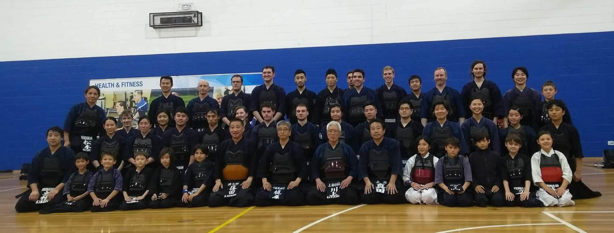

About Kendo
The concept of kendo is to discipline the human character through the principles of the katana.
~ The All Japan Kendo Federation
Kendo (剣道), “The Way of The Sword”, is a traditional Japanese martial art, descending from kenjutsu (Japanese swordsmanship).
In Kendo, practitioners wear bogu (armour) and use shinai (bamboo swords) to strike one another while performing specialised footwork and kiai (shout). Practitioners test their skills against each other in matches called shiai. The contest of skills with an opponent gives kendo an athletic aspect which draws many to the art. However, the main focus of kendo is on the the philosophical aspects of discipline and the cultivation of the mind, body and spirit through continued keiko (practice).
About MUKC
We are Monash University Kendo Club, also known as MUKC. We are a Monash University Sports club, and are predominantly student-run with guidance from qualified instructors. As the name suggests, our club practices kendo, as a means of training both our minds and bodies.
We conduct one beginner’s course a year, which starts in February/March when the first university semester begins. The club holds three trainings per week. Social functions and competitions are also held throughout the year. Anyone who is interested in kendo is more than welcome to come and watch our training sessions or to contact us for more information.
Among our members and instructors, are people who have international experience, and are state and national representatives. Our members come from all walks of life, are of various ages and are very welcoming. Feel free to speak to any of us before or after training when we’re hanging out outside the Games Hall where we train.
Instructors
- Mr Yoichi Yano (7 Dan)
- Mrs Noriko Matsumoto (6 Dan)
- Mr Kazuya Kimura (5 Dan)
- Mrs Kaori Dimovski (5 Dan)
Committee
- President: Zishi Wang
- Vice President: Joshua Wildey
- Treasurer: N/A
- Secretary: Yuki Yu
- General Members: Kaori Dimovski & Eugene Chow
- [Previous years’ committee members] (#)
Events
- Melbourne University joint Kendo Camp
- Movies and Bowling night
- Club BBQ
- … more !
Competitions we attend
- Australian University Games
- Victorian Kendo Championships
- Australian Kendo Championships
- Otsuka and Nagae Taikai
- Ballarat Kendo Taikai
- … more !